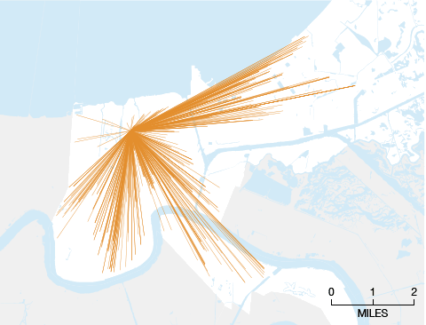
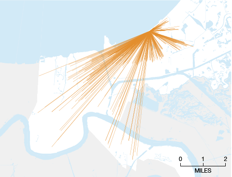

How Far Would You Go For A Good School?
In 2013, the Orleans Parish School Board plotted how far students traveled to get to school. Below, the paths of students from four charter schools we visited when reporting our story
“The End Of Neighborhood Schools”
in 2014.
Arthur Ashe

Bricolage Academy
KIPP Central City Primary
Lake Forest Elementary
